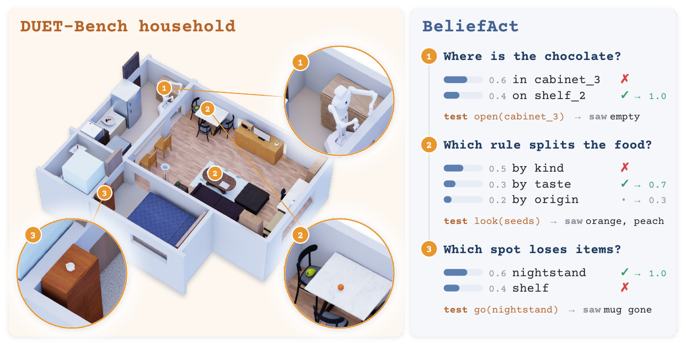
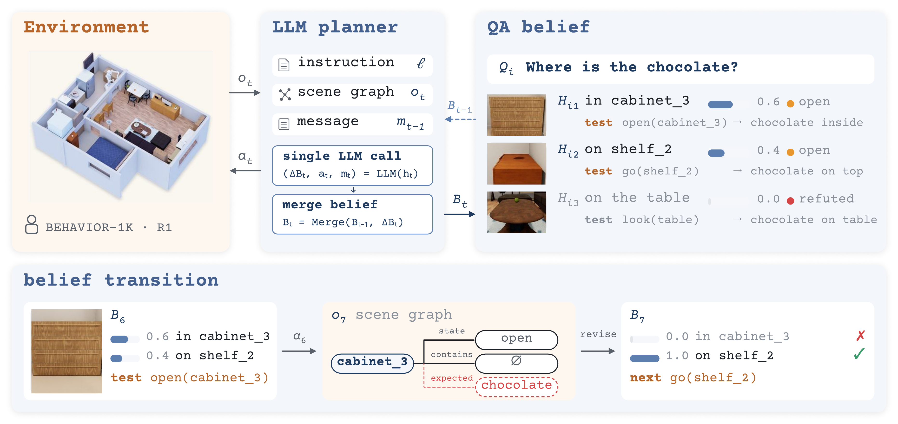
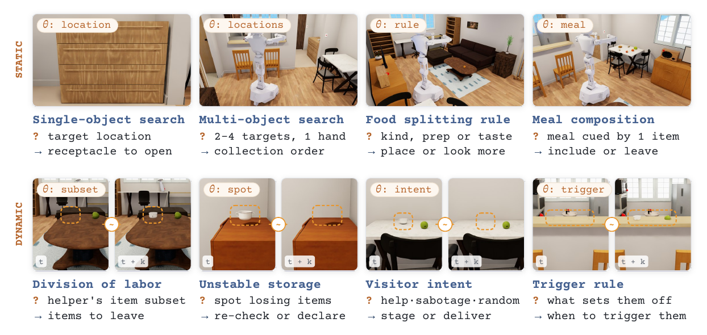

Stanford University
Belief-guided embodied task planning in uncertain, dynamic environments
Stanford University · *Equal contribution
Overview
A household robot faces unknown object locations, unstated arrangement preferences, and a housemate who moves things by unclear habits. BeliefAct represents task-relevant unknowns as free-form questions with probability-weighted answers, pairs each answer with an action that would test it and the observation expected if it holds, and reweights the answers against what it then observes.

Replays
Logged runs from the paper's main experiment (Gemini 3.8 Flash). Each circle is a robot; its position after every action is the logged pose. The line between two positions is a shortest walkable route, drawn for display.
Scenes rendered in NVIDIA Isaac Sim from BEHAVIOR-1K. Video: BeliefAct vs. PCE in trigger rule (1080p, 60 fps)
Method

Unknowns are free-form questions, each with candidate answers and probabilities, so the belief is not tied to a fixed state space.
Every answer carries an action that would settle it and the observation expected if it holds.
Each round the LLM returns a belief update, an action and a message; the update is merged into the belief, and answers are reweighted against the new observation.
DUET-Bench
240 episodes in which the initial configuration, the goal interpretation, or an external process is uncertain.

Results
240 DUET-Bench episodes with Gemini 3.8 Flash and a 200-round horizon. BeliefAct matches the strongest baselines in final success and needs fewer rounds.
Re-scored from the main runs: an episode counts if it succeeded within H′ rounds. Hover to read values.
Trigger rule, visitor intent and unstable storage: the 56 episodes that Naive, BSG, PCE and BeliefAct all solve. Before the change no difference is significant; after it, the paired 95% CIs of BeliefAct's savings exclude zero against all three baselines.
BeliefAct's belief against the simulator's hidden state: mean probability on the true answer before and after the first relevant evidence, per task (Appendix A.4 of the paper).
Success rate, rounds and interaction cost per episode (Table 1 of the paper).
HUME is adapted to DUET-Bench and receives the same context as BeliefAct (Appendix A.2 of the paper). On two-agent Communicative Watch-and-Help, BeliefAct matches the baselines in task completion.
Citation
@article{li2026grounded,
title = {Grounded in Imagination: Belief-Guided Embodied Task Planning in Uncertain, Dynamic Environments},
author = {Li, Anqi and Weng, Yijia and You, Yang and Hong, Yining and Guibas, Leonidas},
journal = {arXiv preprint},
year = {2026}
}